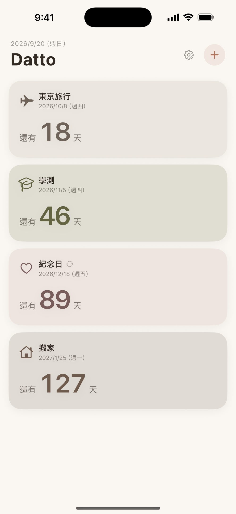

Datto · 使用指南 · English · 日本語
如何在 iPhone 主畫面顯示生日、紀念日倒數
把距離生日、紀念日或旅行還有幾天放在主畫面上，就不必再自己數——每次打開 iPhone 都看得到。
以下是用倒數 App Datto 的設定方法。1 個小工具和 3 個事件可免費使用。
1. 加入日子
- 打開 Datto，點「＋」。
- 輸入事件名稱和日期，點「儲存」。
也可以直接匯入：
- 「從聯絡人選擇」：挑選聯絡人裡的生日。
- 「從行事曆選擇」：從未來一年的行事曆行程中挑選。
只會匯入姓名和日期，聯絡人與行事曆的內容不會離開你的 iPhone。

2. 放到主畫面
- 在主畫面的空白處長按。
- 點左上角的「＋」（編輯），搜尋「Datto」。
- 選擇小尺寸，點「加入小工具」。
要換成顯示別的日子：長按小工具，點「編輯小工具」，再選擇事件。
3. 讓生日每年重複（Pro）
使用 Datto Pro 時，可以把「重複」設為「每年」。日子過了之後會自動進到下一年，不必重新輸入日期。也可以選「每月」。
Datto Pro 是買斷制，不是訂閱。還可無限新增事件與小工具、使用中型、大型、鎖定畫面小工具，以及安靜的節點提醒（100 天前、前一天、當天等，不會發出聲音）。
常見問題
免費可以用到什麼程度？最多 3 個事件，以及 1 個顯示其中一個事件的主畫面小型小工具。沒有廣告，也不用註冊帳號。Datto Pro 是買斷制，可無限新增事件與小工具，並可使用中型、大型、鎖定畫面小工具及重複事件。
聯絡人或行事曆的內容會被傳出去嗎？不會。Datto 只匯入姓名和日期，聯絡人與行事曆的內容不會離開你的 iPhone。
生日可以每年重複倒數嗎？可以，使用 Datto Pro 時把「重複」設為「每年」，日子過了之後會自動進到下一年。
想更換小工具顯示的日子。長按小工具，點「編輯小工具」，再選擇事件。
在 App Store 下載 Datto
不用訂閱、沒有廣告、不用帳號 · 關於 Datto